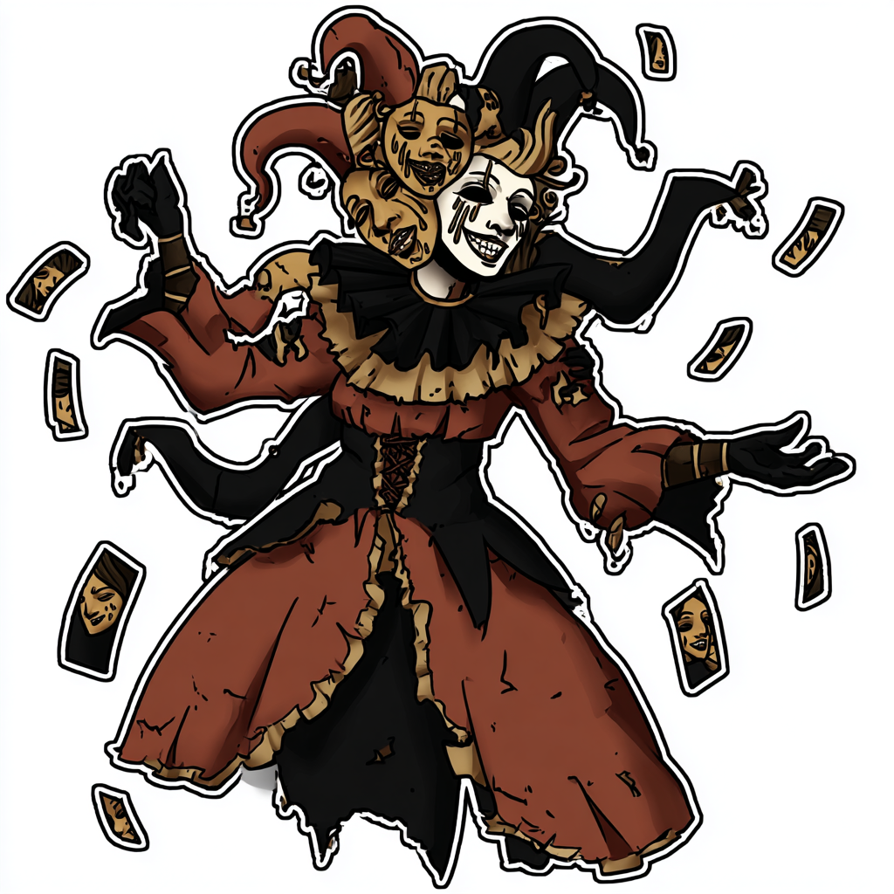
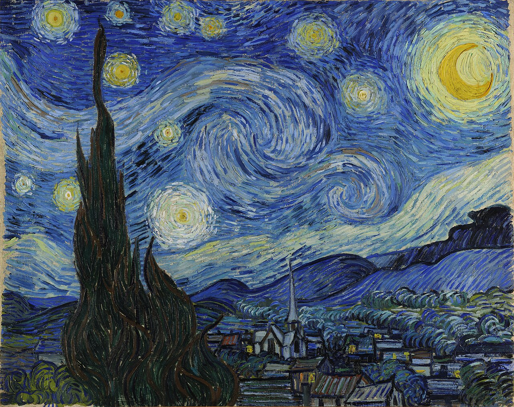

Qu'est-ce qu'une divinité ?
Dans l'univers de Projet Croisade, une divinité n'est pas simplement une figure divine, mais une manifestation vivante de croyances collectives. Grâce à l'engagement et à la foi partagée de nombreux adeptes, l'image de cette divinité se façonne, se solidifie et prend forme en tant qu'entité tangible, née de l'imagination collective de ses croyants. Les prêtres et les paladins doivent prononcer une prière de dix mots en l'honneur de leur divinité pour invoquer ses pouvoirs. Si vous souhaitez créer une nouvelle divinité, il est recommandé d'opter pour un panthéon polythéiste afin de pouvoir accéder à vos pouvoirs en tout temps.
Les divinités de Projet Croisade évoluent en fonction du nombre d'adeptes qui les vénèrent et des dommages qu'elles subissent. Leur état peut influencer l'accès aux pouvoirs des prêtres et des paladins :
Bon
Divinité intacte, fortement vénérée. Pouvoirs accessibles pleinement.
Affaibli
Perte d'adeptes ou blessures importantes. Pouvoirs réduits ou instables.
Mort
Invocation impossible. La divinité a disparu ou a été détruite.
Inconnu
État de la divinité indéterminé. L'accès aux pouvoirs est imprévisible.
Le Fou Bon
Le Dieu Fou est une entité imprévisible et insaisissable.
Il ne possède ni forme fixe, ni vérité absolue.
Certains le voient comme l'incarnation de la stupidité et du chaos. D'autres le considèrent comme un maître de la tromperie, un farceur divin qui se joue des mortels. Pour quelques rares initiés, il est l'intelligence pure, dissimulée derrière l'absurde.
On dit qu'il rit lorsque les plans s'effondrent.
On dit qu'il sourit lorsque l'impossible devient réalité.
Le Dieu Fou ne promet ni ordre ni paix. Il promet le renversement, l'inattendu, la révélation brutale que tout peut basculer.
Le Cirque Incarlate
Le Dieu Fou est principalement prié par un groupe connu sous le nom du Cirque Incarlate. Cruels et théâtraux, ses membres voient dans la folie une forme de liberté. Ils croient que le monde n'est qu'une scène, et que la souffrance comme la joie ne sont que des numéros dans une grande représentation.
Pour eux, le chaos n'est pas une erreur. C'est un spectacle. Et le Dieu Fou en est le metteur en scène invisible.

Image temporaire — générée par IA
O'orun et O'supa Bon
Le Dieu du Jour, O'orun, et la déesse de la Nuit, O'supa, forment une entité double, ancienne et insondable. Ils ne sont pas deux divinités distinctes, mais deux faces d'une même essence primordiale. Depuis l'aube du monde, ils incarnent l'équilibre fragile entre la lumière et l'ombre.
Le Credo du Jour
Les fidèles d'O'orun prient la face lumineuse de l'entité. Ils recherchent :
- La santé
- L'abondance
- La clarté
- La vérité
- La prospérité
Pour eux, la lumière révèle, purifie et protège. Ils voient dans O'orun la force qui repousse le chaos et nourrit la vie.
Le Credo de la Nuit
Les fidèles d'O'supa prient la face obscure de l'entité. Ils recherchent :
- Le calme
- La renaissance
- Le mystère
- La transformation
- L'ombre protectrice
Pour eux, l'obscurité n'est pas malveillante. Elle est le repos, le secret et la gestation. C'est au travers d'O'supa que les blessures guérissent et que les âmes se reforment.
La Guerre Éternelle
Malgré leur origine commune, les deux factions s'opposent sans relâche. Les Héros d'O'orun et les Champions d'O'supa se livrent une bataille sans fin, persuadés que leur vision du monde doit triompher.
La guerre entre la Lumière et l'Ombre ne cessera qu'à la fin des temps, lorsque l'entité elle-même décidera de réunifier ses deux visages.

Image temporaire — générée par IA
Ehphine Affaibli
Ehphine représente ce qu'il y a de bien dans chaque être vivant. Selon elle, il existe, même dans le cœur de la plus cruelle des créatures, une part de bonté. Ehphine accepte les défauts de ses priants et les guide au travers de ceux-ci pour faire d'eux de meilleurs individus. Elle prêche que la bonté et le pardon sont les meilleurs cadeaux et que chaque petit geste compte pour faire un monde meilleur.
La majorité des priants d'Ehphine sont des humains faisant partie de l'empire. Pendant plusieurs années, tous les habitants de l'empire vénéraient Ehphine et la considéraient comme leur ange gardien et la lumière les guidant vers le droit chemin.
Les trois principes du culte
Le culte d'Ehphine se base sur les trois principes qu'elle enseigne.
- La bonté — les priants auront tendance à faire de petits gestes afin d'aider leur prochain et les personnes dans le besoin.
- Le courage — les priants d'Ehphine ne reculeront pas devant le danger ; ils combattent la peur et la transforment en force pour protéger les faibles et les démunis.
- Le pardon — probablement le plus sacré des trois fondements du culte, les priants acceptent les défauts des autres ainsi que d'eux-mêmes et pardonnent les erreurs commises par le passé.
Aujourd'hui, de moins en moins de personnes prêchent encore activement les enseignements d'Ehphine et celle-ci perd en puissance et en influence. Il n'existe plus réellement d'église consacrée à son culte, seulement quelques petits sanctuaires éparpillés sur le territoire de l'empire humain.
Sepudon Affaibli
Sepudon est le gardien sacré des mers et des océans. Il contrôle les marées et le calme des mers varie selon son humeur. Son influence se fait surtout ressentir chez les Aïshas qui le vénèrent comme leur créateur. Selon eux, Sepudon serait à l'origine de toutes les créatures marines, y compris les Aïshas, et les protégerait contre le mal qui ronge de l'intérieur les peuples de la terre. Plusieurs marins et pirates ont pour tradition de transporter des offrandes pour le dieu des mers lorsqu'ils partent pour de long voyage en mer. On raconte que tous ceux qui prennent la mer sans apporter avec eux de cadeaux pour le Père des océans ne reviennent jamais de leur voyage.
Le temple perdu et KorGath
Selon la légende, il existerait un temple perdu au beau milieu de l'océan où aurait autrefois résidé Sepudon. On raconte qu'il y aurait oublié son trident, KorGath ; celui-ci aurait le pouvoir de contrôler les mers.
Aujourd'hui, autant les Aïshas que les marins se sont lancés dans une chasse au trésor afin de retrouver ce temple perdu et prendre possession de l'artefact divin qui se trouve à l'intérieur.
Rah'ny Bon
Rah'ny est la porteuse de toutes les connaissances. Autrefois, elle entretenait une relation très proche avec les Lëfals, premiers habitants du continent. La déesse des connaissances aimait beaucoup partager son savoir avec les autres. Elle apprit aux Lëfals comment chasser, comment cuisiner et comment bâtir des maisons et des sanctuaires. Elle leur donna ensuite pour mission de bâtir une grande bibliothèque afin d'entreposer tout son savoir.
La bibliothèque cachée
Selon les croyances des priants, cette bibliothèque serait cachée quelque part sur le continent et renfermerait une quantité presque infinie de livres et de grimoires. Elle serait protégée par deux gardiens célestes, Atheriel et Rahtiel, ainsi que Rah'ny en personne. On raconte aussi que la bibliothèque renferme deux artefacts divins ; l'orbe des connaissances ainsi que Hëldia, une arme légendaire qui peut se métamorphoser au besoin de l'utilisateur.
Aujourd'hui, les priants de Rah'ny sont des personnes en quête de savoir infini et quelques aventuriers à la recherche de cette fameuse bibliothèque et des trésors qu'elle renferme.
Sirius Inconnu
Sirius représente l'égalité sous toutes ses formes et intervient dès que celle-ci est rompue. Toutefois, il est celui qui trace les lignes de l'égalité et écrit sa propre justice. Pour lui, le gris n'existe pas et la lumière et l'ombre doivent coexister à force égale. Il ne fait pas de favoritisme ni de compromis pour personne. Sirius est aussi parfois nommé le tueur de dieux, puisqu'il a dû à plusieurs reprises se débarrasser de dieux qui compromettaient l'égalité du monde.
Les priants de Sirius sont bien souvent détachés de lien émotionnel envers qui que ce soit, ils suivent l'exemple de leur maître absolu et éliminent tout obstacle à l'équilibre parfait. Toutefois, il n'est pas rare que Sirius doive intervenir directement contre ces priants puisque ceux-ci causent un déséquilibre en commettant des meurtres en son nom.
Xelcith, la tueuse de dieux
Aujourd'hui, personne ne sait réellement où se trouve Sirius. Certains racontent qu'il aurait perdu son arme légendaire quelque part sur le continent. Cette dague aurait été forgée dans un métal sombre ayant la capacité de blesser même les dieux, c'est pourquoi elle porte le nom de Xelcith, la tueuse de dieux. Si celle-ci venait à tomber dans les mains d'une personne mal intentionnée, les conséquences pourraient être désastreuses.
L'Arbre Monde Affaibli
L'Arbre Monde était au départ simplement qu'une graine composée d'un peu de la magie de chacun des anciens dieux. Il est devenu une divinité à part entière à force que les premiers peuples du continent, les Lëfals, le prient. La volonté et les croyances de chacun des Lëfals ont permis à l'Arbre Monde de développer une conscience et des pouvoirs divins qui lui sont propres.
Suite à la guerre entre les Lëfals et les dieux, l'Arbre Monde s'est retrouvé scindé en deux : un côté représentant les Lëfals qui croyaient toujours en lui et un autre représentant les Lëfals ayant perdu la foi.
Aujourd'hui, l'Arbre Monde perd en puissance et voit son nombre de croyants réduire de jour en jour. Les Elfs, anciennement Lëfals, ont grandement perdu la foi suite aux Grandes Exterminations qui ont frappé le continent. L'instabilité religieuse du peuple affecte grandement l'Arbre Monde qui craint de disparaître si la situation ne change pas sous peu.
Les Entités
Les entités sont des êtres dont l'existence fragile peut être vénérée. Un déséquilibre dans leur culte peut entraîner l'effacement de leur domaine. Certaines peuvent devenir des divinités à part entière.